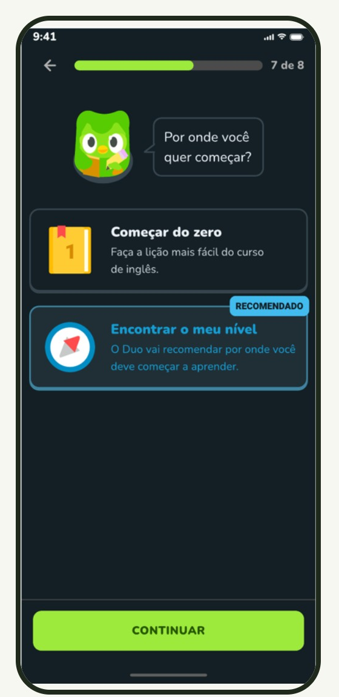
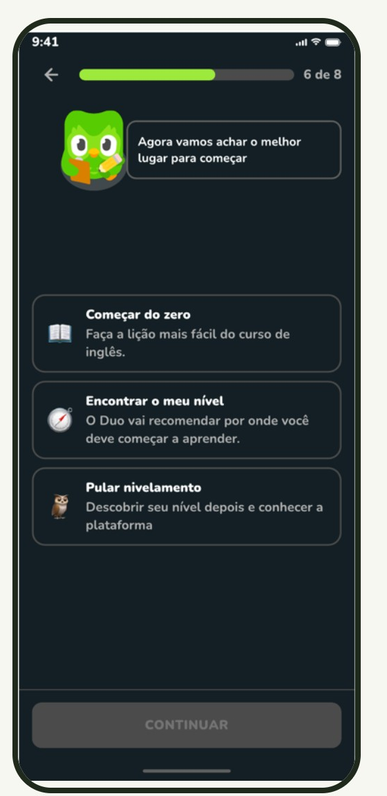

Do dado ao teste: o caminho que percorremos
Conheça o processo investigativo dividido nas 5 etapas do estudo
Contexto e métricas
Base sintética, objetivo de produto e métrica principal.
Achados do funil
Onde e com quem a jornada perde pessoas (Android vs iOS).
Hipóteses e experimento
Variações A e B no Figma e teste não moderado no Maze.
Resultados e decisão
O que os dados pareados revelam e cadeia de raciocínio.
Limites e próximos
Vieses, Scorecard de IA (Humanifesto) e backlog RITE.
Queremos entender por que tantos novos usuários não chegam à primeira lição
usuários em uma base sintética de onboarding do Duolingo
Fonte: base sintética fornecida pela disciplinaIdentificar onde o onboarding perde usuários e testar uma melhoria
Que mudança no nivelamento leva mais pessoas até a primeira lição?
Do cadastro até a primeira lição concluída
Todo o processo está documentado e aberto para consulta
Planilha de dados
Base de 8.000 usuários tratada, tabelas dinâmicas, funil e dashboard baseline da Semana 1.
Board no FigJam
O processo completo: métricas, achados, hipóteses, plano experimental e referências.
Só metade dos novos usuários conclui a primeira lição
Radiografia do estado inicial com a base sintética de 8.000 usuários
Ativação
dos usuários concluem a primeira lição logo após o onboarding.
concluem o nivelamento
retenção em 7 dias (D7)
retenção em 30 dias (D30)
de uso médio em 30 dias
erros por usuário no onboarding
nota média de NPS (0 a 10)
Seis eventos bastam para medir a jornada até a primeira lição
Tratamento das 8.000 linhas, tabelas dinâmicas e dashboard analítico.
Protótipos navegáveis das duas variações (Controle A e Proposta B).
Teste remoto não moderado com a turma para validação com usuários.
| Evento (Taxonomia) | Dispara quando |
|---|---|
| signup_completed | Finaliza o cadastro básico |
| onboarding_goal_set | Define o objetivo de estudo |
| placement_test_completed | Conclui o teste de nivelamento |
| first_lesson_started | Abre a primeira lição |
| first_lesson_completed | Conclui a primeira lição |
| onboarding_error_logged | Erra uma resposta no onboarding |
Plano de instrumentação mínima · Base da análise
A maior perda acontece entre o objetivo e o nivelamento
Análise passo a passo da perda de 8.000 cadastros até 4.014 lições concluídas
⚠️ Atenção ao comportamento não-linear: 5.294 pessoas iniciam a lição, mais que as 4.933 que concluem o nivelamento. O nivelamento não é obrigatório no fluxo, então parte dessa perda pode ser de usuários que desistiram por falta de um atalho claro para pular.
No Android, o onboarding tem mais que o dobro de erros do iOS
Forte correlação entre atrito de interface na plataforma Android e queda na ativação
| Indicador | Android 🤖 | iOS 🍏 |
|---|---|---|
| Erros no onboarding (média por usuário) | 2,05 | 0,94 |
| Conclusão do nivelamento | 52,5% | 70,4% |
| Ativação (1ª lição concluída) | 44,2% | Acima de 54% |
Android (2,05) contra iOS (0,94) durante o preenchimento do onboarding
na conclusão do nivelamento para usuários Android vs iOS (52,5% vs 70,4%)
Nossa aposta: um onboarding mais curto, com opção de pular o nivelamento
Eliminando ruído e concedendo autonomia para que o usuário sinta o valor do app mais rápido
“Se tirarmos do caminho as perguntas que não ajudam a pessoa a aprender e deixarmos o nivelamento opcional, mais gente chega à primeira lição e a conclui.”
29,2% se perdem no nivelamento
50,2% → 58% ou mais
Reduzir erros de toque no Android (2,05 erros por usuário) continua válida, mas os protótipos não alteraram botões ou espaçamentos nesta rodada.
Comparamos o fluxo atual do Android com a nossa proposta

26 telas no fluxo completo (18 antes da 1ª lição)
A escolha de onde começar aparece bem no fim da jornada, com apenas duas opções. O cadastro completo vem somente após a lição, distribuído em 3 telas distintas (pedindo idade, e-mail e dados adicionais).
🚫 Telas de transição sem ação: "Olha só, que legal!" e "Vamos fazer a primeira lição?".
🚫 Perguntas redundantes: "Como você soube do Duolingo?" e "Quanto você entende do idioma?".

20 telas no fluxo completo (15 antes da 1ª lição)
Ganha a opção estratégica de "Pular nivelamento" (atacando a fuga de 29,2%). Elimina telas de marketing e transições vazias, antecipando a escolha de início da etapa 7 para a etapa 6.
✅ Cadastro em 1 tela só: Apenas Nome e E-mail, sem coletar idade.
✅ Menos fricção inicial: Usuário tem controle total para ir direto à experiência de aprendizado.
telas no fluxo completo
telas antes da primeira lição
opções para escolher onde começar
❌ Saiu (6 telas cortadas)
- • "Como você soube do Duolingo?": pergunta de marketing que não ajuda quem aprende.
- • "Quanto você entende do idioma?": nível passa a ser decidido na escolha de início.
- • "Olha só, que legal" e "Vamos fazer a 1ª lição?": telas de transição sem ação.
- • "Vamos começar na seção 2": decidia o nível antes de qualquer teste.
- • "Por onde você quer começar?": substituída pela nova escolha com 3 opções.
✨ Entrou ou mudou na proposta
- • Opção "Pular nivelamento": ataca diretamente a perda de 29,2% no teste.
- • Escolha de início mais cedo: sobe da etapa 7 para a etapa 6.
- • Notificação na tela de rotina: o pedido aparece no contexto da meta diária.
- • Cadastro em 1 tela no início: nome e e-mail, sem pedir idade (antes: 3 telas no fim).
- • Confirmação do widget: mensagem clara "você pode adicionar quando quiser".
Entre as mesmas pessoas, A e B empatam no sucesso, e B é mais rápida
Resultados comparativos colhidos via Maze com 22 participantes pareados
“Imagine que você acabou de baixar o Duolingo porque quer começar a aprender inglês. Use o aplicativo até concluir a sua primeira lição.”
Ferramenta: Maze (plano gratuito)
Amostra: 50 em A, 31 em B • 22 fizeram as duas versões
Coleta: 2 a 4 de outubro de 2026
Definimos a regra de vitória antes de coletar os dados
A proposta tem maior taxa de sucesso, sem piorar métricas de apoio.
A proposta não melhora o suficiente ou cria efeito indesejado.
Dados mistos, amostra insuficiente ou falha técnica na coleta.
Análise das 22 pessoas que completaram ambas as versões
| Indicador | A · Atual | B · Proposta | O que o dado sugere |
|---|---|---|---|
| Chegaram ao fim da missão | 21 de 22 | 21 de 22 | Empate; a mesma pessoa desistiu nas duas versões |
| Pularam o nivelamento (fim sem lição) | Sem a opção | 6 pessoas | 24% de B escolheu pular o teste quando teve a opção |
| Fizeram a lição até o fim | 21 | 15 | Em B, o atalho de pular encerrava a missão diretamente |
| Tempo mediano, quem fez a lição (s) | 122 s | 68 s ⚡ | B foi quase 2x mais rápida para 15 de 15 pessoas |
| Cliques incorretos (mediana) | 45% | 39% | B menor para 14 das 22 pessoas |
| Nota da experiência (1 a 5) | 4,10 | 3,95 | Praticamente igual |
| Sucesso na amostra total não pareada | 92,7% (n=50) | 96,0% (n=31) | Diferença vem de 2 iniciantes que fizeram só A |
B parece mais rápida, mas pedir cadastro cedo incomoda
Depoimentos textuais recolhidos no questionário final do Maze
Inconclusivo, com sinal favorável a B
Recomendamos uma nova iteração da proposta. O sucesso empatou entre as mesmas pessoas (21 de 22) e B foi notavelmente mais rápida, mas a conclusão definitiva é limitada pela ordem fixa de aplicação, pela amostra pequena e pelo atalho do Maze que encerrava a missão antes da lição.
21 de 22 chegaram ao fim nas duas; B mais rápida para 15 de 15.
Menos telas encurtam o caminho sem prejudicar a conclusão.
24% quiseram pular o nivelamento, a etapa com maior perda.
Manter menos telas e o botão de pular; mover cadastro para depois da lição.
Repetir com ordem alternada e o botão de pular levando à lição.
O que limita as conclusões e a avaliação ética do projeto
Transparência científica, mapeamento de vieses e governança responsável
Todos os participantes fizeram o fluxo A antes de B; parte da rapidez de B decorre naturalmente do aprendizado prévio da tarefa.
No Maze, clicar em pular encerrava a missão imediatamente, de modo que 6 conclusões de B não passaram pela execução da lição.
Como múltiplas telas foram alteradas ao mesmo tempo, não é possível isolar estatisticamente qual variável exata causou a rapidez.
Apenas a versão B solicitou cadastro no início da jornada, revelando-se o principal atrito qualitativo apontado pelos voluntários.
22 pessoas na amostra pareada, sendo colegas da pós-graduação em UX. 20 dos 22 já eram usuários ativos de Duolingo (quando o onboarding foca em iniciantes).
Decisão metodológica acertada do grupo: dada a ordem fixa, perguntar preferência mediria apenas o efeito da ordem, e não a qualidade do design.
O maior risco de viés está nos dados sintéticos e em quem testou
A base fornecida é simulada e agregada. Usuários sintéticos representam comportamentos médios e não capturam nuances humanas reais.
Risco: Decidir sobre evidência falsaOs participantes do teste foram alunos de pós em UX familiarizados com a ferramenta. O público iniciante real ficou sub-representado.
Quem ficou invisível: Iniciantes reaisO Claude foi utilizado para estruturar a análise, cruzar tabelas do Maze e diagramar raciocínios, com conferência manual minuciosa de cada dado.
Revisão Humana: Human-in-the-loopA recomendação de nível do Duo avaliada pelos 5 pilares do Humanifesto
Escala: 1 (Não atendido, com risco) · 3 (Atendido em parte) · 5 (Atendido com evidência clara)
| Pilar | Pergunta de Design | Evidência no Projeto | Nota |
|---|---|---|---|
| Controle | Quem pode revisar, corrigir ou interromper a IA? | Na proposta B, a pessoa tem autonomia para pular a recomendação da IA; 24% escolheram pular. | 4 |
| Confiança | A confiança é proporcional à evidência disponível? | O score afirma genericamente “você já fala sobre a maioria dos assuntos” para todos, sem fundamentar. | 2 |
| Diversidade | Quem é bem atendido, mal atendido ou invisível? | Android apresenta 2,2x mais erros que iOS; iniciantes absolutos ficaram ausentes da amostra. | 2 |
| Segurança | Qual é o pior uso previsível e como mitigá-lo? | O cadastro da proposta pede estritamente nome e e-mail, abolindo a coleta desnecessária de idade. | 4 |
| Equilíbrio | A IA amplia capacidades ou cria dependência? | Sem evidência mensurada no teste piloto; permanece em aberto para o próximo ciclo experimental. | Sem nota |
O próximo teste precisa separar o design da ordem de teste
Matriz de priorização ordenada por impacto na tomada de decisão e esforço de execução
| # | Ação Priorizada | Métrica Impactada | Impacto | Esforço |
|---|---|---|---|---|
| 1 | Repetir o teste com a ordem alternada (counterbalancing) | Taxa de sucesso | Alto | Baixo |
| 2 | Fazer o "Pular nivelamento" levar diretamente à lição | Conclusão da lição | Alto | Baixo |
| 3 | Levar o cadastro para depois da primeira lição (post-activation) | Nota da experiência | Alto | Médio |
| 4 | Validar com iniciantes reais, inclusive no ecossistema Android | Ativação | Alto | Alto |
| 5 | Retomar a Hipótese 2: redução de erros de toque no Android | Erros no onboarding | Médio | Médio |
| 6 | Iterar em estudo RITE (Rapid Iterative Testing and Evaluation), 3 a 4 rodadas | Problemas por rodada | Médio | Médio |